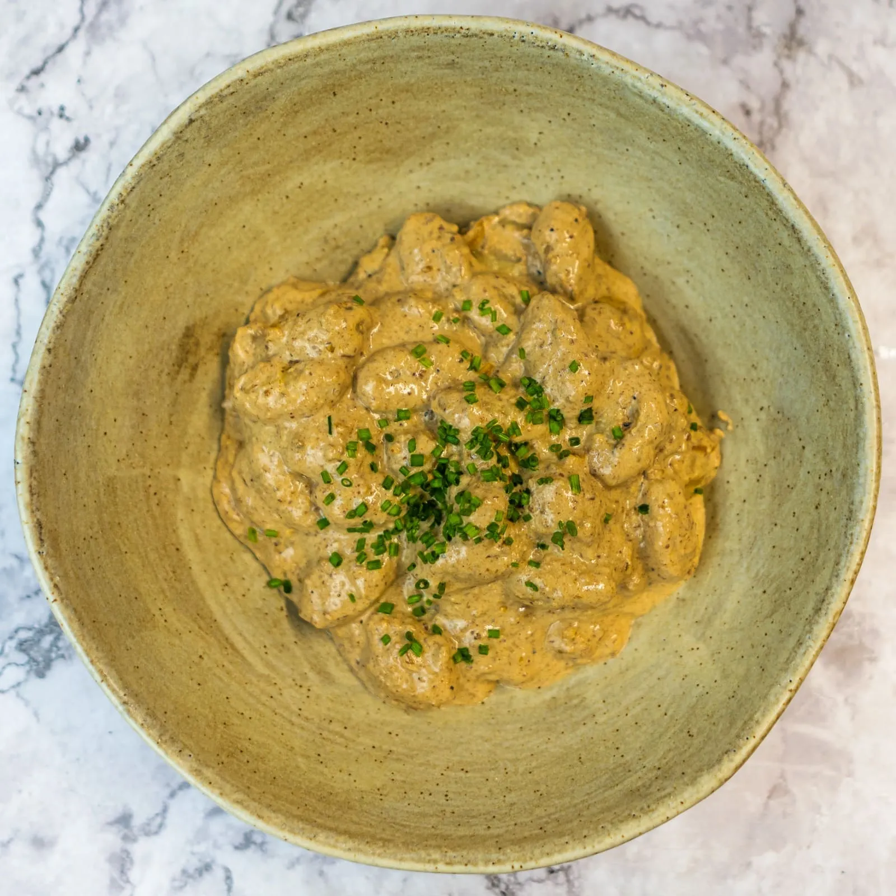

⏲ 25 minuts 👥 4 racions

Aquesta mica de pluja anima una mica als més boletaires, però mentre anem escassos de bolets haurem
de tirar de conserves i altres mètodes. Per això aquest cap de setmana us proposem una recepta
que podeu fer amb ceps deshidratats, i que si podeu acompanyar de bolets frescos ja seria ideal!
Es tracta d'uns nyoquis de patata amb una salsa de ceps, una recepta de @elcomidista. És tracta
d'una elaboració ben potent que fem a partir d'aquests bolets deshidratats que en fem pols, i que
aromatitzem de tal manera que hi podem trobar diversos gustos que casen a la perfecció.
Ingredients:
- 700g de nyoquis
- 60g de ceps deshidratats
- 400ml de nata per a cuinar
- 1 ceba
- 2 grans d'all
- 4 anxoves en conserva
- 1 branqueta de romaní fresc
- 1 branqueta de farigola fresca
- Un trosset de canyella
- 1 culleradeta de nou moscada
- Mantega
- Oli, sal i pebre
- Triturem els 60 g de ceps deshidratats fins que quedi una pols fina. Els torrem lleugerament en una paella, amb el foc moderat i sense deixar de remenar, fins que agafin color i els retirem.
- Desfem un bon dau de mantega amb una mica d’oli en una paella, on sofregim una ceba picada fina i dos grans d’all laminats. Al cap d’uns minuts, afegim un tros de canyella, una branqueta de romaní i una de farigola.
- Un cop fet el sofregit, hi integrem les 4 anxoves i, un cop desfetes, afegim els 400 ml de nata per cuinar i la pols de ceps. Si voleu la salsa fina, la podeu triturar, retirant els aromàtics.
- Bullim els 700 g de nyoquis uns 3 minuts, fins que flotin o seguint les instruccions del fabricant.
- Els integrem a la salsa, afegint una mica d’aigua de cocció per donar l’espessor ideal. Afegim la culleradeta de nou moscada, i posem a punt de sal i pebre.
- Emplatem i acabem amb una mica de cibulet picat.